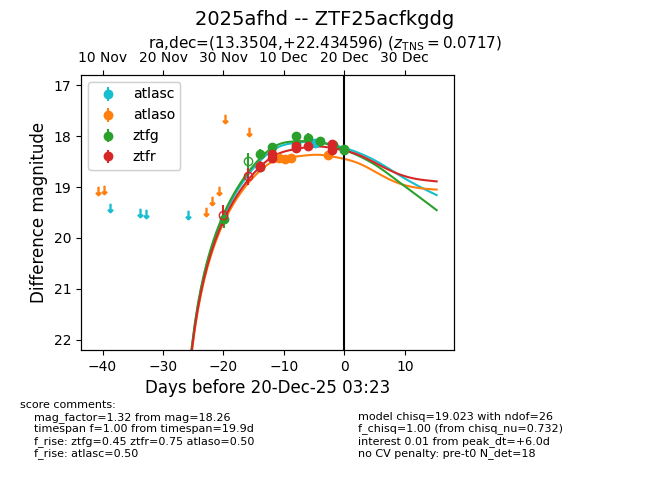
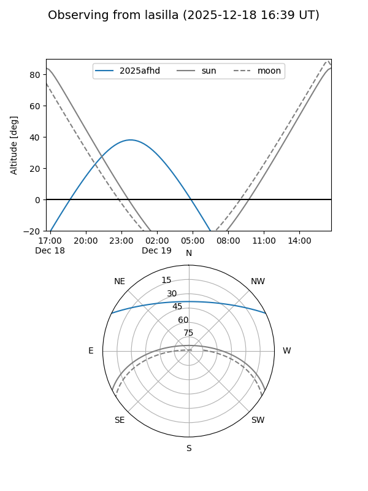
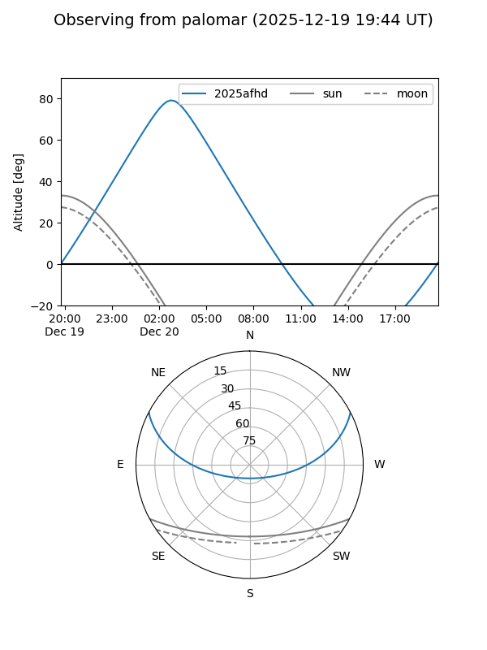
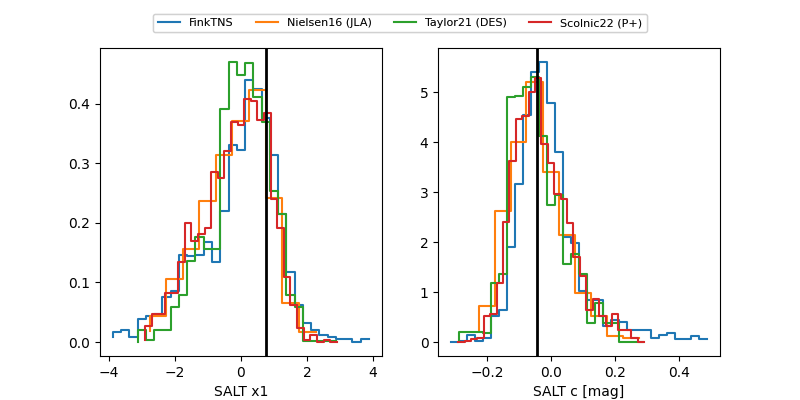

2025afhd
Target 2025afhd at 2025-12-22 14:16
Aliases and brokers:
FINK: fink-portal.org/ZTF25acfkgdg
Lasair: lasair-ztf.lsst.ac.uk/objects/ZTF25acfkgdg
ALeRCE: alerce.online/object/ZTF25acfkgdg
TNS: wis-tns.org/object/2025afhd
YSE: ziggy.ucolick.org/yse/transient_detail/2025afhd
alt names
ZTF25acfkgdg (ztf,fink_ztf)
2025afhd (tns,yse)
Coordinates:
equatorial (ra, dec) = 13.3504,+22.43460
equatorial (HMS+DMS) = 00:53:24.09,+22:26:04.55
galactic (l, b) = (123.5281,-40.43488)
Flags:
confirmed ia
Photometry:
last atlasc=18.32, atlaso=18.39, ztfg=18.34, ztfr=18.27
2 atlasc, 5 atlaso, 14 ztfg, 11 ztfr detections
Lightcurve

Visibility


Additional plots
